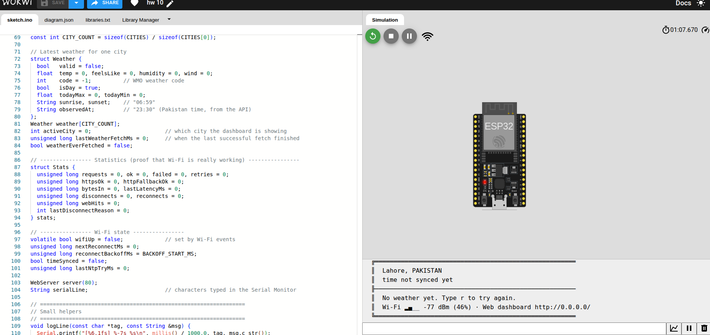

LIVE PAKISTAN
WEATHER & TIME
Technology: Wi-Fi, and only Wi-Fi

SCREENSHOT GOES HERE
Save your Wokwi screenshot as wokwi-screenshot.png in the embedded folder.
The idea
The ESP32 joins Wi-Fi, syncs Pakistan time from internet time servers (NTP), and fetches live weather for Karachi, Lahore and Islamabad from the Open-Meteo API in a single HTTPS request. At the same time it runs its own web server with an HTML dashboard where buttons switch between the three cities, and the same switch works by typing 1, 2 or 3 in the Serial Monitor. Every message on the Serial Monitor is proof that the chip is really talking to the internet over Wi-Fi.
Pushing Wi-Fi to its full extent
Instead of connecting once, my ESP32 uses Wi-Fi in six ways: it scans nearby networks, connects and reacts to Wi-Fi events, syncs time over NTP, downloads JSON over HTTPS, serves its own web dashboard, and reconnects by itself with growing waits when the connection drops. I also tested the unusual cases on purpose: a command that cuts the Wi-Fi to prove it recovers, a broken API request to prove errors are handled safely, and retries that fall back from HTTPS to plain HTTP.
Parts list
Try the dashboard
This is the same dashboard the ESP32 serves from its own web server. Opening the real one needs Wokwi's paid IoT Gateway, so this copy runs in your browser and fetches the same live data. Click a city:
On the ESP32, each click also prints CITY Switched to Lahore (from web browser) in the Serial Monitor.
Couldn't reach the weather service.
How it works
- Scan: on boot it lists every Wi-Fi network it can hear, with channel and signal.
- Connect: joins Wokwi-GUEST and listens to Wi-Fi events (connected, got IP, disconnected).
- Time: asks NTP servers for the time and converts it to Pakistan time.
- Weather: one HTTPS request gets all 3 cities. If it fails, it retries, then tries plain HTTP.
- Serve: hosts the dashboard and a small JSON API (
/api/weather,/api/status). - Recover: if Wi-Fi drops, it reconnects by itself, waiting 2 s, 4 s, 8 s … up to 30 s.
Try it in Wokwi
Press ▶ in Wokwi, wait for the weather, then type these in the Serial Monitor and press Enter:
Built for CS CRP · Heuser College · Weather data by Open-Meteo